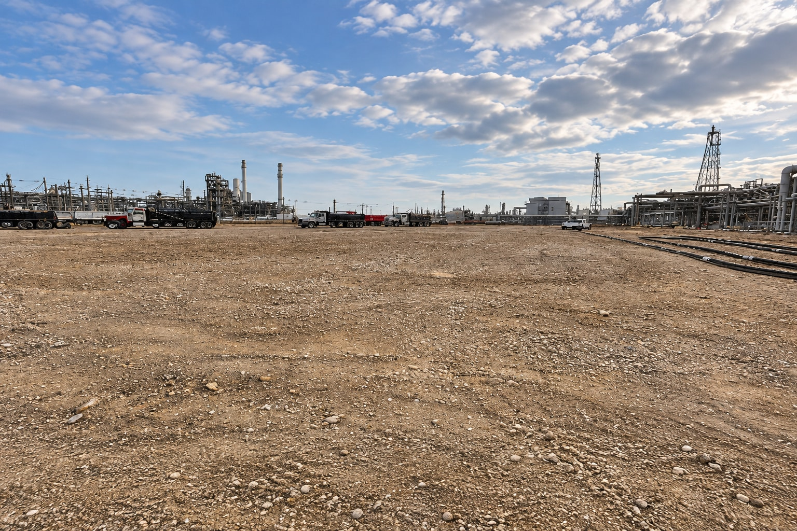

Environmental work should support a defined site outcome. NorthStar brings remediation and restoration capabilities to complex industrial and property transitions.

Site transition / Retained infrastructure
Follow the material. Define the outcome.
Soil, water, structures and residual materials can create connected workstreams. Plan their handling together, with the site’s environmental requirements and future condition in view.
Bring environmental requirements, civil work and material handling into the same scope discussion. Establish the specialists, responsibilities and acceptance criteria for the work.
Remediate affected areas
Connect environmental remediation with the conditions identified for the site and its materials.
Address soil and water
Discuss water-resource management, dredging and soil-stabilization requirements with the relevant specialists.
Manage residual materials
Plan material segregation, recovery and disposal pathways alongside demolition or decommissioning.
Restore the site
Align grading and restoration with the agreed end condition; specialized scopes can include impoundment, landfill and coal-ash work.
Provide site investigations, material records and applicable requirements.
Define material routes and coordination with ongoing site activities.
Set the restoration and turnover criteria for the next use.
 NorthStarWe Bring Answers.
NorthStarWe Bring Answers.